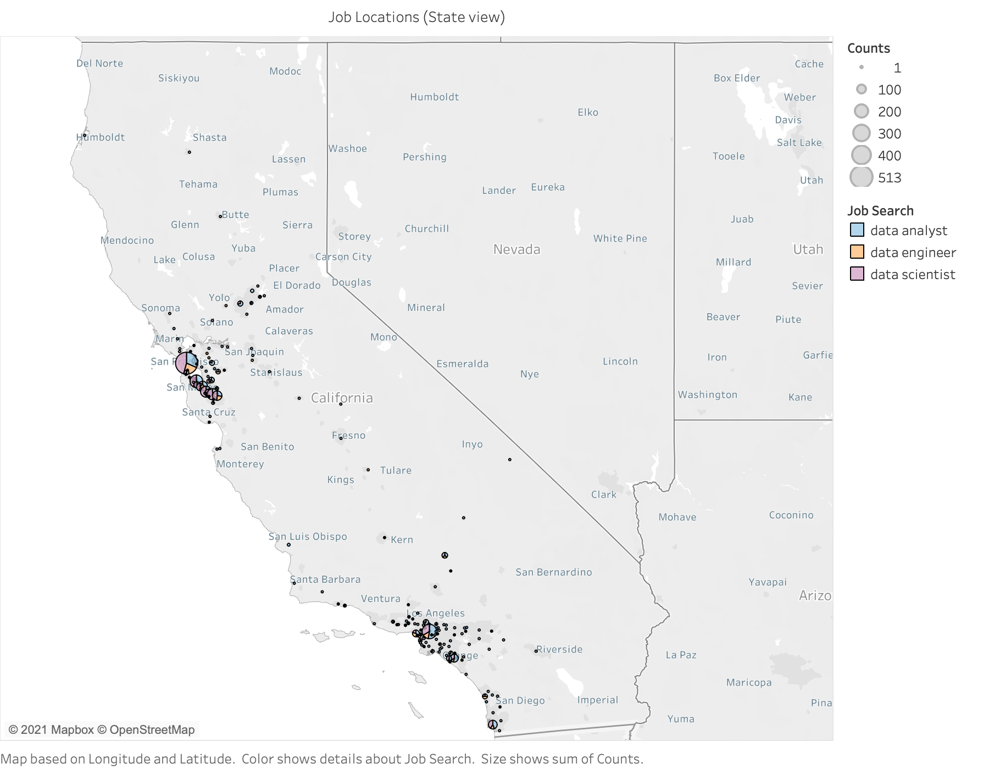
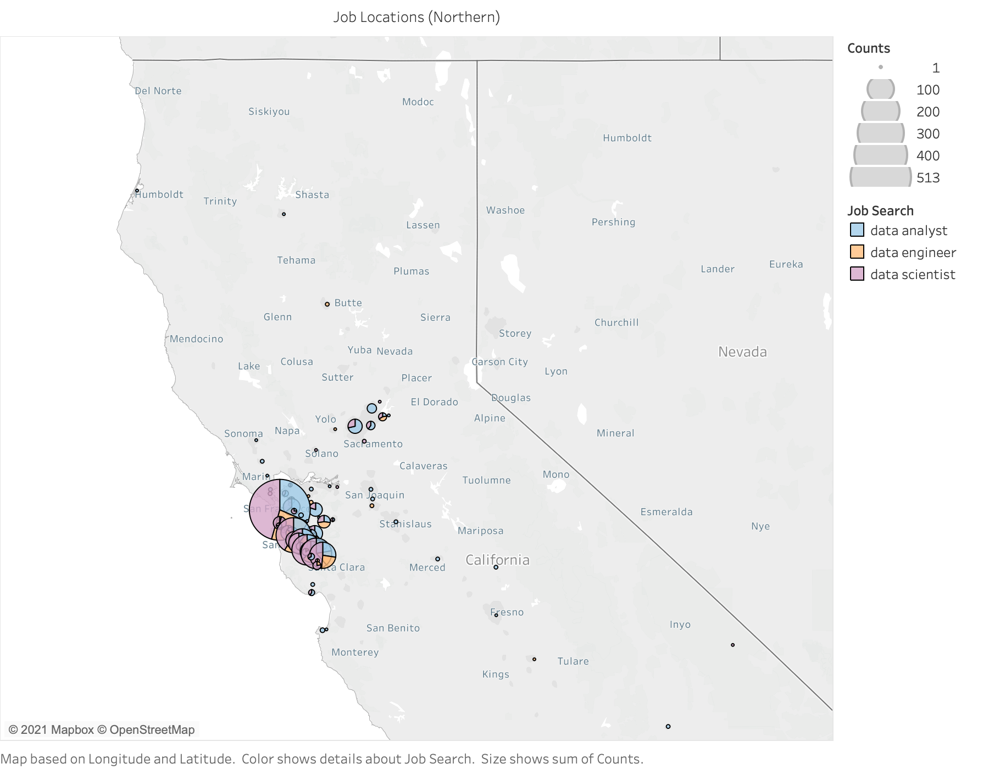
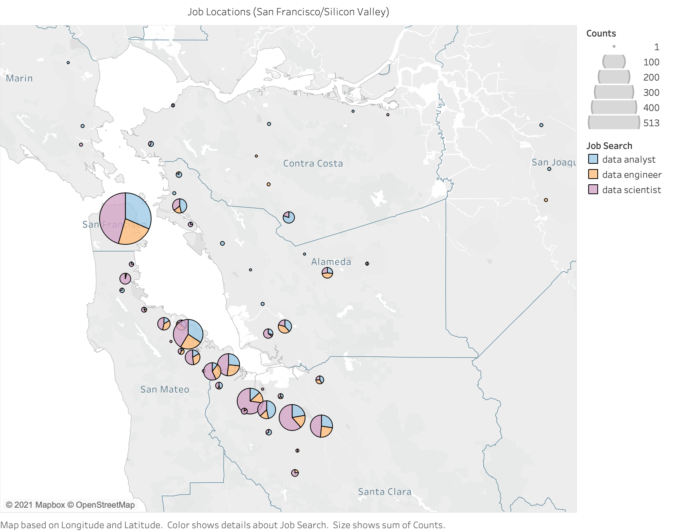
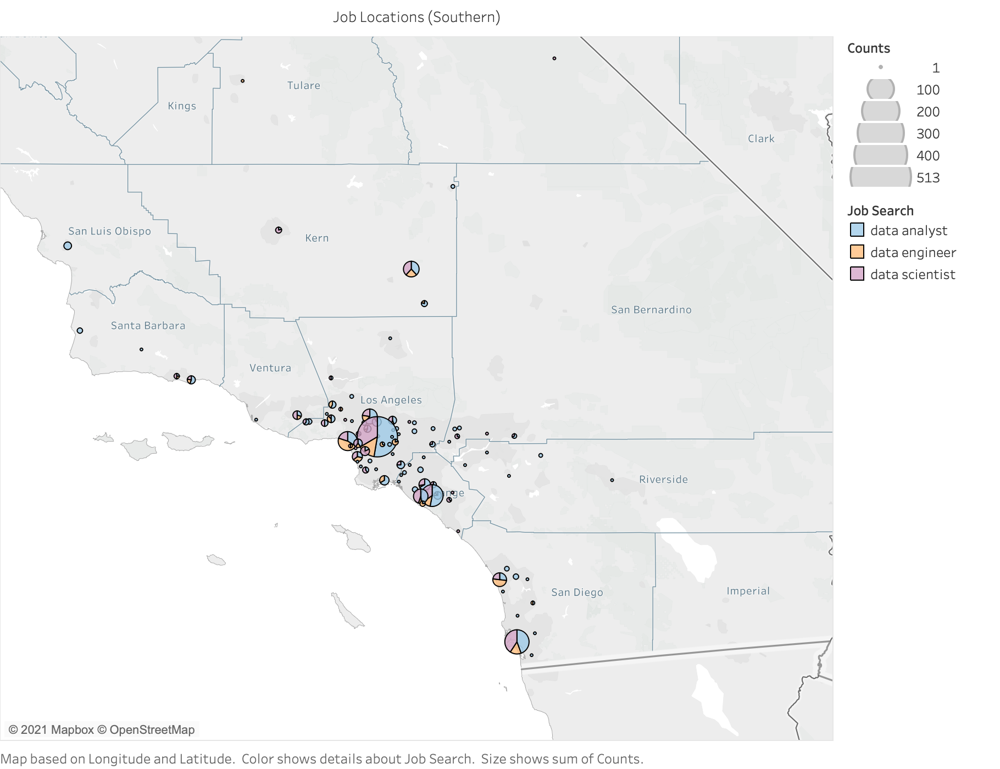
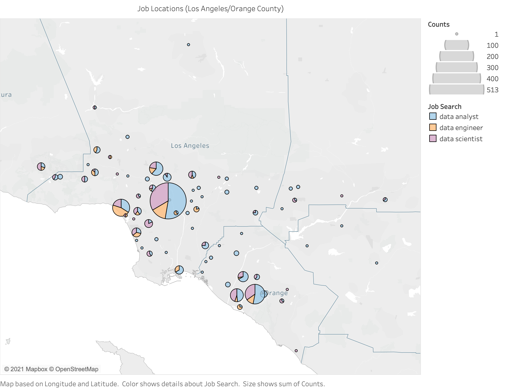

Key skills employers are seeking
in Data Analyst, Data Engineer,
and Data Scientist positions
Project Description and Outline
For our final project, we wanted to determine the skills required for the top data analyst roles: Data Analyst, Data Scientist, and Data Engineer. In order to find the most sought after skills employers are seeking for each position, we scraped a popular job board, Indeed.com, to obtain job title, job description, location, etc for positions posted in California. Next, we combined the data and used a Natural Language Processing model to analyze the importance of words within the job descriptions and have determined a confidence rating for the top data analyst roles. Finally, we used Tableau to create visualizations of the data to understand the importance and frequency of the words.

Web Scraping
Using Beautiful Soup, we scraped Indeed.com for job postings for Data Analyst, Data Engineer, and Data Scientist positions and extracted pertinent data related to the given job title. We then loaded this JSON data into Pandas, cleaned the data, combined the job postings , and finally converted the dataframes into CSV files to be used in our next step with Natural Language Processing (NLP).
Machine Learning
Pre-Processing:
We used Pyspark to tokenize, remove stop-words, stem, and lemmatize the text. Then used the pos-tag function in the nltk package to categorize words by part-of-speech. Finally, we used Pandas dataframes to organize and aggregate functions on the dataset.
Supervised Learning:
We chose to focus on Natural Language Processing since the majority of our data was context and text based. Based our machine learning model off of Badreesh Shetty's spam-or-ham classifier, which uses RandomForest to categorize emails, and used both CountVectorizer and TF-IDF to analyze the job descriptions of tagged postings.
TF-IDF model was able to accurately predict job requirements for the Data Analyst and Data Scientist positions but had a significantly lower confidence score for Data Engineer positions:

Confidence_Chart
Visualizations
To create our infographic titled "Word Frequency in Data Analyst, Engineer, and Scientist Job Postings in California," we used the Tag Cloud and Bar Chart visualization options in Tableau. To create our remaining visualizations, we used the Line Plot and Bar Chart visualization options to offer a more in depth analysis to our data. To create the "Job Posting Distribution Maps," we converted California city names to a geographical measure, then utilized Tableau's map visualizations.

.png)
.png)
.png)
Job Posting Distribution Maps
California Postings

Northern California

San Francisco / Bay Area

Southern California

Los Angeles - Orange County

San Diego